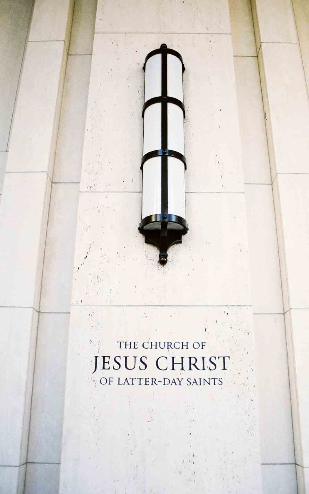

Services
Services
- Free access to changing rooms and bathroom facilities for temple patrons who have traveled far and need to change to and from church clothes
- A playroom and low-cost, short-term babysitting services for the children of patrons
- Long-term stay accommodations in kitchenette suites for full-time temple missionaries
- Temple history themed reception and sitting area
- A wedding reception hall that can be easily customized with a simple catering menu and kitchen access for food preparation and serving
- A wedding reception hall that can be easily customized with a simple catering menu and kitchen access for food preparation and serving
- A family search center that supports family search and ordinance work
